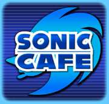

Sonic Cafe (2007)

Sonic Cafe was closed on December 1st 2007. It has being merged with the SEGA Ages (another mobile service) to form Puyo Puyo! Sega.
 ★
★

Sonic Cafe was closed on December 1st 2007. It has being merged with the SEGA Ages (another mobile service) to form Puyo Puyo! Sega.
The plot of the game is that Dr. Eggman has plans to rebuild Eggmanland and has kidnapped animals to do so. The player takes control of Sonic, who has infiltrated his train, the "Egg Liner". At each stop, Sonic has to hop off the train and run closer to the lead train car.
| Date | July 30th 2007 |
| Platforms | FOMA 90X/70X |
| Preserved | No |
A Sonic themed poker game. Unlike most of the other games, the player doesn't play as any Sonic character, but as an avatar they created in another application, Avatar wo Tsukurou!. Winning matches against Sonic characters would reward the player with gold to customize their avatar.
| Date | August 28th 2007 |
| Platforms | FOMA 90X |
| Preserved | No |